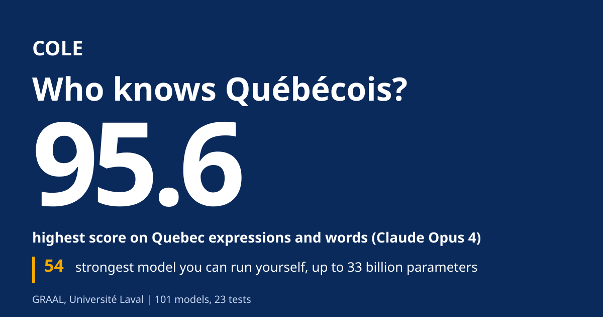

Explore the resultsExplorer les résultats
Eight ways to look at the same scores. All scores are percentages.Huit façons de regarder les mêmes scores. Tous les scores sont des pourcentages.
Quebec tests against other French testsTests québécois contre autres tests en français
One line per model. The first mark is its average on the two Quebec tests, the second its average on the other French tests. The farther apart the marks, the bigger the difference.Une ligne par modèle. Le premier repère est sa moyenne sur les deux tests québécois, le second sa moyenne sur les autres tests en français. Plus les repères sont éloignés, plus la différence est grande.Does a model do as well on Quebec French as on French in general?Un modèle réussit-il aussi bien le français québécois que le français en général ?
Above chance?Au-dessus du hasard ?
The bar is the model’s score. The gold tick is the score of the project’s random-guessing model on the same test. Two tests have no tick because their score is a correlation, not a share of right answers.La barre est le score du modèle. Le repère doré est le score du modèle de tirage au hasard du projet sur le même test. Deux tests n’ont pas de repère, car leur score est une corrélation et non une part de réponses justes.A test with two answers is passed half the time by guessing. This shows how far a model is from guessing.Un test à deux réponses est réussi une fois sur deux au hasard. Voici la distance entre un modèle et le hasard.
The hardest tasksLes épreuves les plus difficiles
One row per task, grouped by skill, the closest to guessing first. The gold tick is the score of random guessing, the circle the strongest model, the square the median model. A bold name means the median model is within 5 points of guessing. No tick for FQuAD, PIAF, SICK-FR, STS22, WSD-Fr: for these, guessing is not a meaningful reference (correlations and free-text answers); they come last.Une ligne par épreuve, regroupées par compétence, les plus proches du hasard d’abord. Le repère doré est le score du tirage au hasard, le rond le modèle le plus fort, le carré le modèle médian. Un nom en gras signale que le modèle médian est à moins de 5 points du hasard. Pas de repère pour FQuAD, PIAF, SICK-FR, STS22, WSD-Fr : le hasard n’y est pas une référence utile (corrélations et réponses libres) ; elles viennent en dernier.Against guessing, where do the strongest and the typical model stand?Face au hasard, où se situent le modèle le plus fort et le modèle typique ?
HeatmapCarte de chaleur
Darker means a higher score. The value is printed in each cell. Hatched cells have no result. Press a column title to sort.Plus c’est foncé, plus le score est élevé. La valeur est inscrite dans chaque case. Les cases hachurées n’ont pas de résultat. Appuyez sur un titre de colonne pour trier.Every model, every skill, one tone per band of scores.Chaque modèle, chaque compétence, un ton par tranche de scores.
Size against scoreTaille contre score
Each mark is a model. Left to right is its size on a log scale, bottom to top its score. Models whose size is not published are in the strip on the right.Chaque repère est un modèle. De gauche à droite, sa taille sur une échelle logarithmique ; de bas en haut, son score. Les modèles dont la taille n’est pas publiée sont dans la bande de droite.Does a bigger model score higher?Un modèle plus gros obtient-il un score plus fort ?
Open weights against APIPoids ouverts contre API
One block per skill. Each mark is a model: circles are open-weight models, squares are models served through an API. The white bar is the median of each group. The random-guessing model is left out. Models with unknown access: 0, so none is left out of a group.Un bloc par compétence. Chaque repère est un modèle : les ronds sont les modèles à poids ouverts, les carrés ceux servis par API. La barre blanche est la médiane de chaque groupe. Le modèle de tirage au hasard est exclu. Modèles à accès inconnu : 0, donc aucun n’est laissé hors d’un groupe.Do models with open weights trail the ones served through an API?Les modèles à poids ouverts sont-ils moins forts que ceux servis par API ?
Would you pass?Réussiriez-vous ?
The questions come from the public training and validation parts of the data, with the answer given by the dataset. Models are not tested on these four questions here: the scores shown at the end are for the whole test.Les questions viennent des parties publiques d’entraînement et de validation des données, avec la réponse du jeu de données. Les modèles ne sont pas testés ici sur ces quatre questions : les scores affichés à la fin portent sur le test entier.Four real questions from the public data of the tests. Answer, then check.Quatre vraies questions tirées des données publiques des tests. Répondez, puis vérifiez.
Progress over timeProgrès dans le temps
The step goes up each time a dated model beats every earlier one. The vertical axis starts at the lowest score shown, not at zero.L’escalier monte chaque fois qu’un modèle daté dépasse tous les précédents. L’axe vertical commence au plus bas score affiché, pas à zéro.The highest score reached so far, by month, among models whose name carries a date.Le score le plus élevé atteint jusqu’ici, mois par mois, parmi les modèles dont le nom porte une date.

Share the headlinePartager le constat
A picture of the main figures, sized for social networks.Une image des chiffres principaux, au format des réseaux sociaux.
Download the card (PNG, English)Télécharger la carte (PNG, anglais) Download the card (PNG, French)Télécharger la carte (PNG, français)